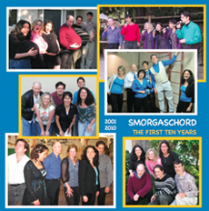
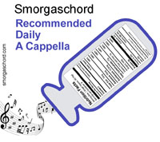
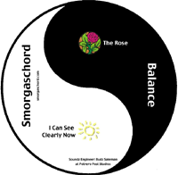
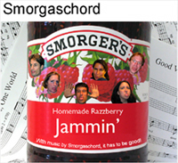
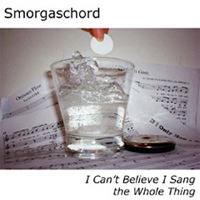
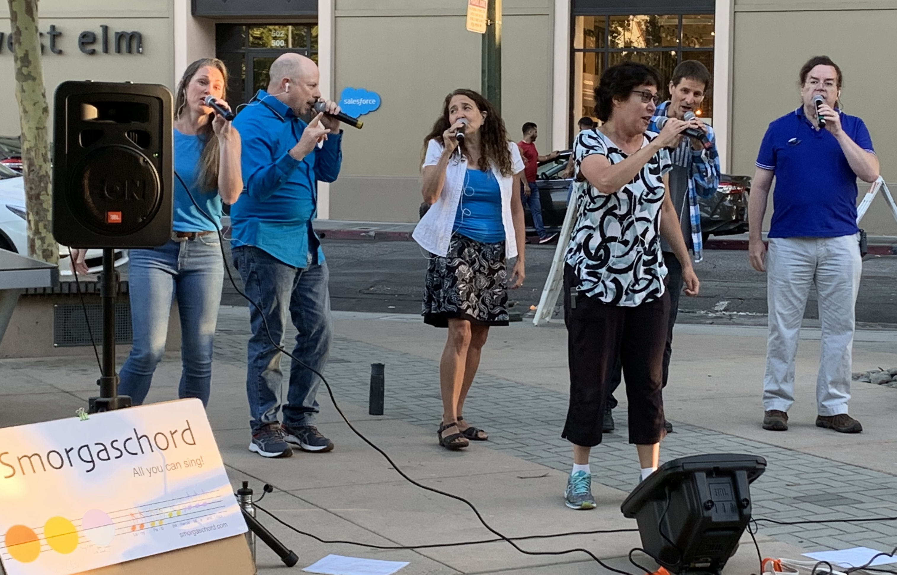
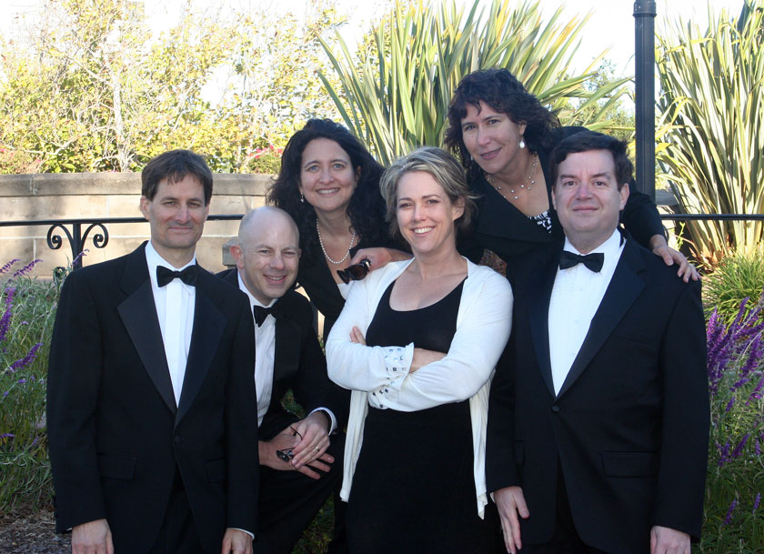

Songs in our current repertoire
Our menu includes a mix of pop, rock, jazz, and classical. Below is our current repertoire, with links to recordings when available.
| Title | Genre | Arranger |
|---|---|---|
| All Star - Smash Mouth | Rock | Hutcherson+ |
| The Biggest Ball of Twine in Minnesota - Weird Al | Folk, Pop | Zable* |
| A Book Report on Peter Rabbit - Charlie Brown | Children's Pop | Zable* |
| AM Radio - Everclear | Rock | Whitfield* |
| The Biggest Ball Of Twine In Minnesota - Al Yankovic | Pop | Zable* |
| Can't Stop the Feeling - Justin Timberlake | Pop | Hutcherson+ |
| Drift Away - Dobie Gray | R&B/Pop Rock | Sharon-Dietz |
| Easy Bake Oven - Girlyman | Folk | Whitfield* |
| Funky Town - Lipps INC | Disco | Rose* |
| Good Vibrations - Beach Boys | Rock, Pop | Whitfield* |
| Happy - Pharrell Williams | Neo soul/funk | Whitfield* |
| How Sweet It Is - Marvin Gaye | Pop | Sharon-Schank* |
| I Can See Clearly Now - Johnny Nash | Pop-Reggae | Whitfield* |
| I'm Yours - Jason Mraz | Pop | Rose* |
| I Miss You / Collide - Blink 152 / Howie Day | Pop | Hutcherson+, Whitfield* |
| I Want You Back - Michael Jackson / Lake Street Dive | Pop/Jazz | Hutcherson+ |
| Leave It - Yes | Rock | Whitfield*-Buoka |
| Let It Go - Frozen | Pop | Rose* |
| Mamas & Papas Medley - The Mamas and the Papas | Folk Rock | Rose* |
| Mercy - Duffy | Soul | Sharon |
| Rocket Man - Elton John | Space Rock | Whitfield* |
| Rain Medley - Trickle Trickle/I Love a Rainy Night/Singing in the Rain | Jazz/Pop | Whitfield* |
| The Rose - Bette Midler | Pop | Whitfield-Gill* |
| She Blinded Me with Weird Science (Medley) - Thomas Dolby, Oingo Boingo | Rock | Rose*-Whitfield* |
| She Needs Me - Craig Carothers | Country, Humor | Gill-Zable-Hamel-Whitfield* |
| Short Skirt Long Jacket - Cake | Alternative/Indie, Pop | Whitfield* |
| So Far Away - Carole King | Pop/Folk Rock | Sharon-Schank* |
| Shut Up and Dance - Walk the Moon | Pop | Sharon |
| Sound of Silence - Simon & Garfunkel | Folk Rock | Zable* |
| Smooth / Oye Como Va - Santana | Rock | Deke Sharon |
| Symphony no. 5 - Beethoven/Seuss | Classical, Humor | Zable* |
| Supermassive Black Hole - Muse | Alternative Rock | Whitfield* |
| Tell Me a Story - Original | Pop | Whitfield* |
| Time of the Season - The Zombies | Psychadelic Pop | Rose* |
| With a Little Help From My Friends - The Beatles | Pop Rock | Whitfield* |
| Wrecking Ball / Everything is Awesome - Cyrus / Lego Movie | Pop | Whitfield* |
| You're the Inspiration - Chicago | Rock | Zable* |
Other songs we've performed
We haven't performed these songs as much lately, but we're happy to dust them off and add them to a set list for a special occasion!
| Title | Genre | Arranger |
|---|---|---|
| 409 - Beach Boys | Rock | Pogue* |
| And So It Goes - Billy Joel | Ballad | Joel / Shaw-Yool* |
| Bard Romance - Original Composition/Gaga | Pop | Zable* |
| Because - Beatles | Pop | E. Krasnovsky |
| Chances - Rebecca Riots | Pop/Folk Rock | Whitfield* |
| Dr. Who - TV Theme | Electronic Rock | Zable* |
| Gilligan's Island - TV Theme | Humor | Zable* |
| Help! - The Beatles | Folk Rock | Whitfield* |
| If I Only Had a Brain - Wizard of Oz | Jazz | Ryan |
| Irish Blessing - Traditional | Barber Shop | Gray |
| It Could Happen to You - Jimmy Van Heusen | Jazz | K.C. |
| Kiss from a Rose - Seal | Pop | Yool* |
| Mon Coeur | Madrigal | Chase-di Lasso |
| O Occhi Manza Mia | Madrigal | Chase-di Lasso |
| Personal Penguin - Boynton | Children's Pop | Zable* |
| The Pirates Who Don't Do Anything - VeggieTales | Children's Pop | Zable* |
| Power of Love - Huey Lewis | Pop | Zable* |
| Siyahamba - South African Traditional | Folk | Unknown |
| Tracks of My Tears - Smokie Robinson | Soul | Pogue* |
| Star Spangled Banner - National Anthem | Anthem | Barnes |
| Under African Skies - Paul Simon | Worldbeat, Pop | Rose* |
| Xena Warrior Princess - TV Theme | Bulgarian Folk | Zable* |
*current or former member of Smorgaschord
+Ryan Hutcherson has a nice catalog of arrangements for purchase. Thanks, Ryan!
CD Archive
The First Ten Years

September 2011. Art: Patti Schank. Collection of 24 best songs from our first decade.
Songs (with original CD; composer(s) & lyricist(s) / arranger(s)) and soloists:
- She Needs Me (RDA; Carothers / Gill-Zable-Hamel-Whitfield), solo by Bill Anderson
- Symphony no. 5 in C-minor (RDA; Beethoven-Seuss / Zable)
- Leave It (RDA; Squire-Rabin-Horn / Buoka-Whitfield)
- The Rose (Balance; McBroom / Whitfield-Gill), solos by Jen and Mia
- Chances (Jammin'; Zeiler / Whitfield), solo by Mia
- How Sweet It Is (RDA; Holland-Dozier-Holland / Sharon-Schank), solo by Jennifer Gill
- Drift Away (RDA; Williams / Sharon-Dietz), solo by Larry Hamel
- Take a Chance on Me (I Can't Believe; Andersson / Whitfield-Sharon-Campbell), solos in order: Mia and Jen
- So Far Away (RDA; King / Sharon-Schank), solo by Patti Schank
- I Feel Good (I Can't Believe; Wright-Brown / Sharon), solo by Jennifer
- Mon Coeur (Jammin'; Chase-di Lasso)
- Kiss from a Rose (Jammin'; Seal / Yool), solo by Jennifer
- Orinoco Flow (I Can't Believe; Ryan / Pogue), solo by Patti
- Il Est Bel Et Bon (Jammin'; Passerau)
- Help (RDA; Lennon / Whitfield), solo by Mia Whitfield
- Icarus (Jammin'; Towner-Rosen / Rosen-Pogue), solo by Jennifer
- You're the Inspiration (RDA; Cetera-Foster / Zable), solo by Patti Schank
- If I Only Had a Brain (I Can't Believe; Arlen-Harburg / Ryan), solo by Bill
- Chili Con Carne (Jammin'; Edenroth / Pogue)
- One Love, One World (Jammin'; Raymo-Jarrett / Martin), solo by Bill
- It Could Happen To You (Jammin'; Burke-Van Heusen / K. C.)
- I Can See Clearly Now (Balance; Nash-Cliff-Hanson / Whitfield), solo by Larry
- Tracks of My Tears (I Can't Believe; Moore-Robinson-Tarplin / Pogue), solo byPatti
- Good Vibrations (Jammin'; Wilson-Love / Whitfield), solo by Jennifer
Recommended Daily A Cappella

November 2010. Sound engineering: Patti Schank & Harold Zable. Art: Patti Schank.
Songs (with composer(s) & lyricist(s) / arranger(s)) and soloists:
- Leave It (Squire-Rabin-Horn / Buoka-Whitfield)
- She Needs Me (Carothers / Gill-Zable-Hamel-Whitfield), solo by Bill Anderson
- So Far Away (King / Sharon-Schank), solo by Patti Schank
- Symphony no. 5 in C-minor (Beethoven-Seuss / Zable)
- Help (Lennon / Whitfield), solo by Mia Whitfield
- How Sweet It Is (Holland-Dozier-Holland / Sharon-Schank), solo by Jennifer Gill
- Doctor Who (Grainer / Zable)
- You're the Inspiration (Cetera-Foster / Zable), solo by Patti Schank
- I Could Write a Book (Rodgers-Hart / Sharon-Raugh), solo by Bill Anderson
- Only One (Taylor / Martosko-Schank-Whitfield), solo by Larry Hamel
- Gilligan's Island (Schwartz-Wyle / Zable)
- Personal Penguin (Boynton-Zable / Zable), solo by Harold Zable
- Star Spangled Banner (Smith-Key / Barnes)
- Siyahamba (Traditional South African Folk Song)
- Drift Away (Williams / Sharon-Dietz), solo by Larry Hamel
Balance

January 2006, demo CD. Sound engineering: Buddy Saleman at Protrero Post studio. Art: Patti Schank.
Songs (with composer(s) & lyricist(s) / arranger(s)) and soloists:
- The Rose (McBroom / Whitfield-Gill), solos by Jen and Mia
- I Can See Clearly Now (Nash-Cliff-Hanson / Whitfield), solo by Larry
Jammin'
December 2004. Sound engineering, art: Patti Schank.
Songs (with composer(s) & lyricist(s) / arranger(s)) and soloists:

- Good Vibrations (Wilson-Love / Whitfield), solo by Jennifer
- Chances (Zeiler / Whitfield), solo by Mia
- Icarus (Towner-Rosen / Rosen-Pogue), solo by Jennifer
- Chili Con Carne (Edenroth / Pogue)
- Mon Coeur (Chase-di Lasso)
- O Occhi Manza Mia (Chase-di Lasso)
- It Could Happen To You (Burke-Van Heusen / K. C.)
- I Can See Clearly Now (Nash-Cliff-Hanson / Whitfield), solo by Larry
- Il Est Bel Et Bon (Passerau)
- Africa (Paich-Porcaro / Crenshaw-Yool-Whitfield), solo by Bill
- Only You (Clarke / Sharon-Raugh), solo by Mia
- Little Red Riding Hood (Blackwell / Raugh-Sharon)
- Kiss from a Rose (Seal / Yool), solo by Jennifer
- One Love, One World (Raymo-Jarrett / Martin), solo by Bill
I Can't Believe I Sang the Whole Thing

December 2002. Sound engineering: Mike Pogue. Art: Patti Schank.
Songs (with composer(s) & lyricist(s) / arranger(s)) and soloists:
- Steppin Out (Berlin / Sharon), solos in order: Mike, Bill, Patti, Mia, Jennifer
- Take a Chance on Me (Andersson / Whitfield-Sharon-Campbell), solos in order: Mia and Jen
- If I Only Had a Brain (Arlen-Harburg / Ryan), solo by Bill
- Over the Rainbow (Arlen-Harburg / Morse-Pogue), solo by Patti
- I Feel Good (Wright-Brown / Sharon), solo by Jennifer
- Tracks of My Tears (Moore-Robinson-Tarplin / Pogue), solo byPatti
- Since First I Saw Your Face (Ford / Leavitt)
- Come Again Sweet Love (Dowland)
- Blue Moon (Rogers-Hart / Sharon), solos in order: Jennifer, Patti, Mia, Bill
- 409 (Love-Wilson / Pogue), solo by Mike
- Orinoco Flow (Ryan / Pogue), solo by Patti
- Maria (Destri / Liwanag)
- Summer Nights (Casey-Jacobs / Whitfield), solos by Bill and Jennifer
- And So It Goes (Joel / Shaw-Yool)
- Faith (Michael / Sharon), solo by Mia
- It Could Happen to You (Burke-Van Heusen / K. C.)
- Irish Blessing (Gray)

songs we're learning
Practicing during a pandemic is challenging, but with periodic practice outdoors at a distance with masks and wireless mics, we're making progress on these:
- Freedom, Zable*
- Counting Stars, Hutcherson

Samples
Recommended Daily A cappella
Balance
Jammin'
I Can't Believe I Sang the Whole Thing
Have a suggestion for a song you think we should do?
Feel free to tell us!